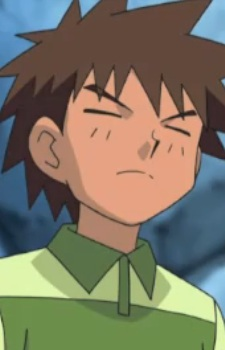
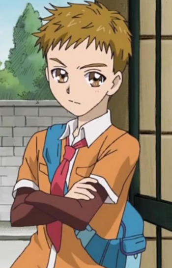

|
Angelina Dallas |
- Black Butler
- Black Butler Recap
- Black Butler 2 Specials
- Black Butler: Book of Circus
- Black Butler: Book of the Altantic
|
Angelina Dallas is Ciel Phantomhive's aunt. She is loud, outspoken and flamboyant. Her nickname is Madam Red due to her hair and clothes. Ann is a doctor at the Royal London Hospital. |
 |
Edward Elric |
- Fullmetal Alchemist
- Fullmetal Alchemist: The Conqueror of Shamballa
- Fullmetal Alchemist: Reflections
- Fullmetal Alchemist: Premium Collection
- Fullmetal Alchemist: Brotherhood
- Fullmetal Alchemist: Brotherhood Specials
- Fullmetal Alchemist: Brotherhood - 4-Koma Theater
- Fullmetal Alchemist: The Sacred Star of Milos
|
Edward Elric is a young alchemical prodigy. He recieved his title, Fullmetal Alchemist, when he was 12 years old. After a fail human transmutation, he loses two of his limbs. He is rather quick-tempered. He is very short for his age. |
|  |
Forrest |
- Pokemon
- Pokemon Chronicles
- Pokemon Advanced Generations
- Pokemon Diamond and Pearl Specials
|
Forrest is Brock's younger brother and second oldest child of Lola and Flint. He is the gym leader when Brock is gone. He has a keen eye for strategy, having learned much from years his father and brother. He is somewhat womanizer, like is older brother. |
 |
Leonardo Bistario Harway |
- Fate/Extra Last Encore
- Fate/Extra Last Encore: Illustrias Geocentric Theory
|
Leonardo Bistario Harway is the Master of Saber in the Moon Cell's Holy War and heir of the Harway family. He has a calm personality. Leo has a natural charisma that draws people to him. He raised to be a ruler and has lacks normal emotions. |
|  |
Syrup |
- Yes! Pretty Cure 5 GoGo!
- Yes! Pretty Cure 5 GoGo!: Happy Birthday in the Sweet Kingdom
- Pretty Cure All Stars GoGo Dream Live!
- Pretty Cure All Stars Movie DX: Minna Tomodachi Kiseki no Zenin Daishuugou
- Pretty Cure All Stars Movie DX2: Kibou no Hikari Rainbow Jewel o Mamore
- Pretty Cure All Stars Movie DX3: Reach the Future! The Rainbow Flower that Connects the World
| Syrup is a delivery boy who can deliver any kids of letters. He can turn into a bird-like mascot or a giant bird. He has amnesia and cannot remember his past. He loves eating pancake. Syrup is slightly arrogant but caring at times. |